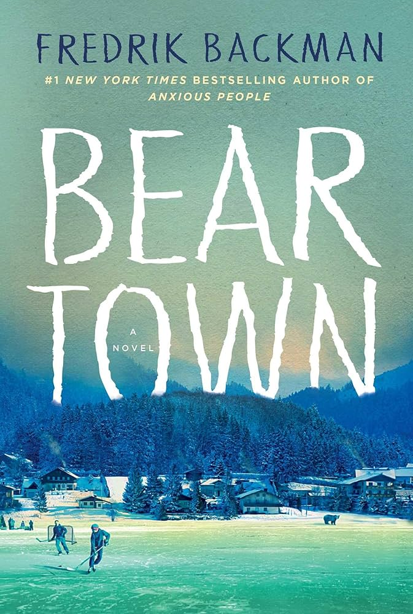
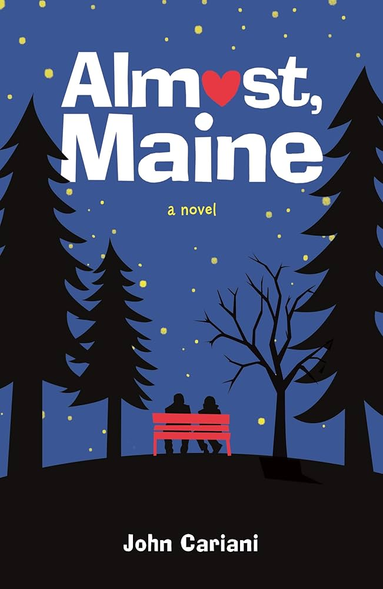
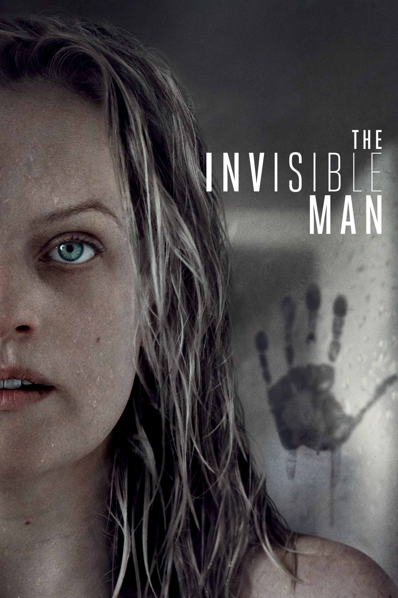
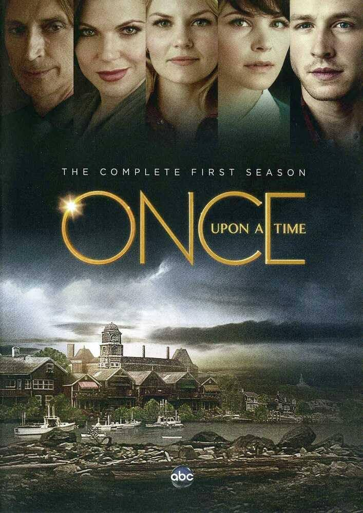
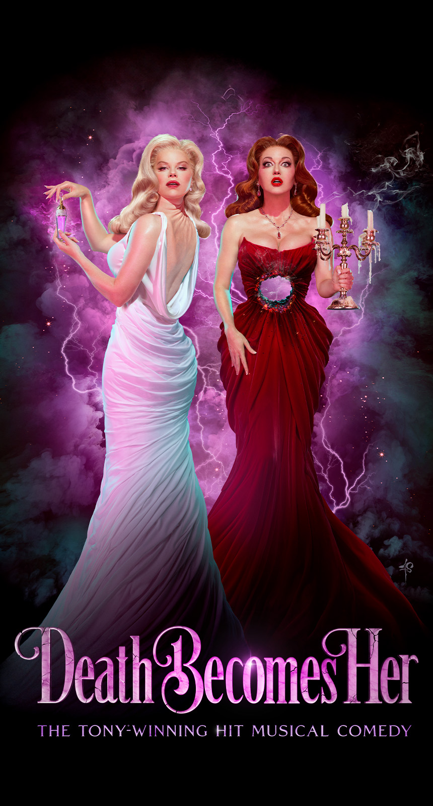
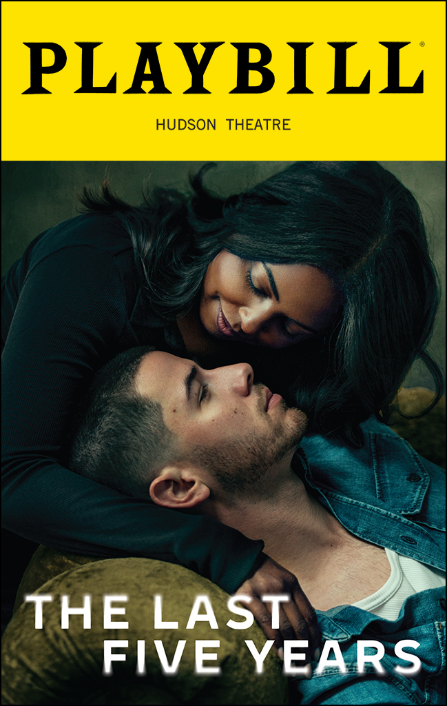

Books
Beartown
by Frederik Backman

Beartown is my most favorite novel in the world. Backman's way of writing is so easy to fall into and heartbreakingly beautiful. Fair warning, this book is pretty heavy, and you should check the trigger warnings before you start, but if you think you can read it, you should. It feels like Backman holds your hand and wraps you in a blanket while showing the worst and best parts of life.
The Shining
by Stephen King

I would argue that the movie is more famous than King's original novel, but the novel is so much better. Like Beartown, it's not for the faint of heart, and check the warnings to protect yourself, but this novel is not just cheap horror. It sources its scares from the human condition and builds complex characters you can understand, love, and fear.
Almost, Maine
by John Cariani

I was introduced to this story through the play version (which I also recommend), but the book is just as delightful. It's a kooky little story about a kooky little town with all the whimsy you need for a quick winter read.
Movies
Die Hard

This classic Christmas movie (and it is a Christmas movie) is always a win. Alan Rickman and Bruce Willis both knock it out of the park, and it's a must for American cultural education. Just trust me. Watch it. And bonus recommendation, Die Hard 2: Die Harder also rocks.
The Invisible Man
This movie is one of the best representations of domestic abuse and terror that I have ever seen. The cinematography works to emphasize the horror of the unknown, or rather the unseen, placing the viewer in the main character's position. This is horror as it should be, at it's most evolved.
Violent Night

I'm sorry to be a little repetitive with this pick, but I love this movie so much. Like Die Hard, it's mostly action. When a group of naughty-listers put a little girl in danger, Santa shows up to deliver a lump of coal straight to the face. This movie is not high-brow; it's not even mid-brow. It's stupid, but I love it so, so much.
TV Shows
Once Upon A Time
This is one of my favorite shows of all time. The premise is that fairy tale characters end up cursed, living normal lives in Maine, and it's so incredibly whimsical. It's the perfect show to curl up by the fire and binge during the dark nights.
Musicals
Death Becomes Her
This musical is absolutely insane. 100% bonkers and worth every minute. It's a little bit spooky but with all the glitz and glam that I associate with winter. This musical sparkles in the sun like snow but gets dark early. It's perfect for a night out at the theater or as the soundtrack to your holiday wrapping. It's based on a movie, but the musical is better.
The Last Five Years
Okay, I promise I love winter, but it seems like most of my winter recs are sad. That's okay though, I love this story. It's completely sung through with alternating perspectives and timings, telling the story both through the songs and the very storytelling itself. The movie version is also great if you can't get to the theater.